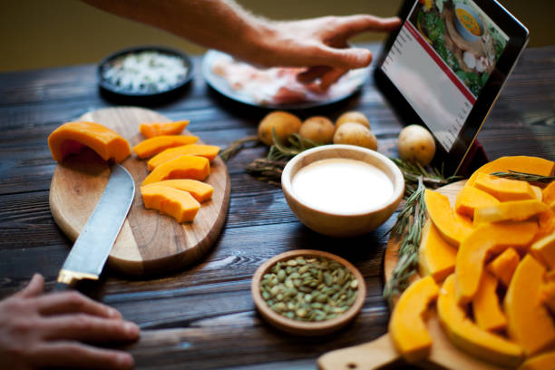

Bienvenue sur notre site dédié à la cuisine et au plaisir de préparer de bons plats. Notre objectif est de rendre la cuisine simple, accessible et agréable pour tout le monde, même pour les débutants. Nous avons créé cette plateforme pour aider les passionnés de cuisine, les étudiants, les familles et toutes les personnes qui souhaitent apprendre à cuisiner facilement. Ici, vous trouverez des recettes expliquées étape par étape, avec des ingrédients simples et des méthodes faciles à suivre. Notre mission est de partager l’amour de la cuisine en proposant des recettes variées : plats traditionnels, repas rapides, desserts gourmands et idées de menus pour toutes les occasions. Nous croyons que cuisiner ne doit pas être compliqué, mais plutôt un moment de créativité, de découverte et de plaisir. À travers ce site, nous souhaitons accompagner chacun dans son apprentissage culinaire et donner envie de préparer des plats délicieux à la maison. Rejoignez-nous et découvrez le plaisir de cuisiner chaque jour !
+5 Années d’expériences
+1000 Utilisateurs satisfaits
+200 Recettes partagées
+300 Avis positifs